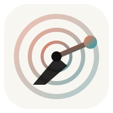
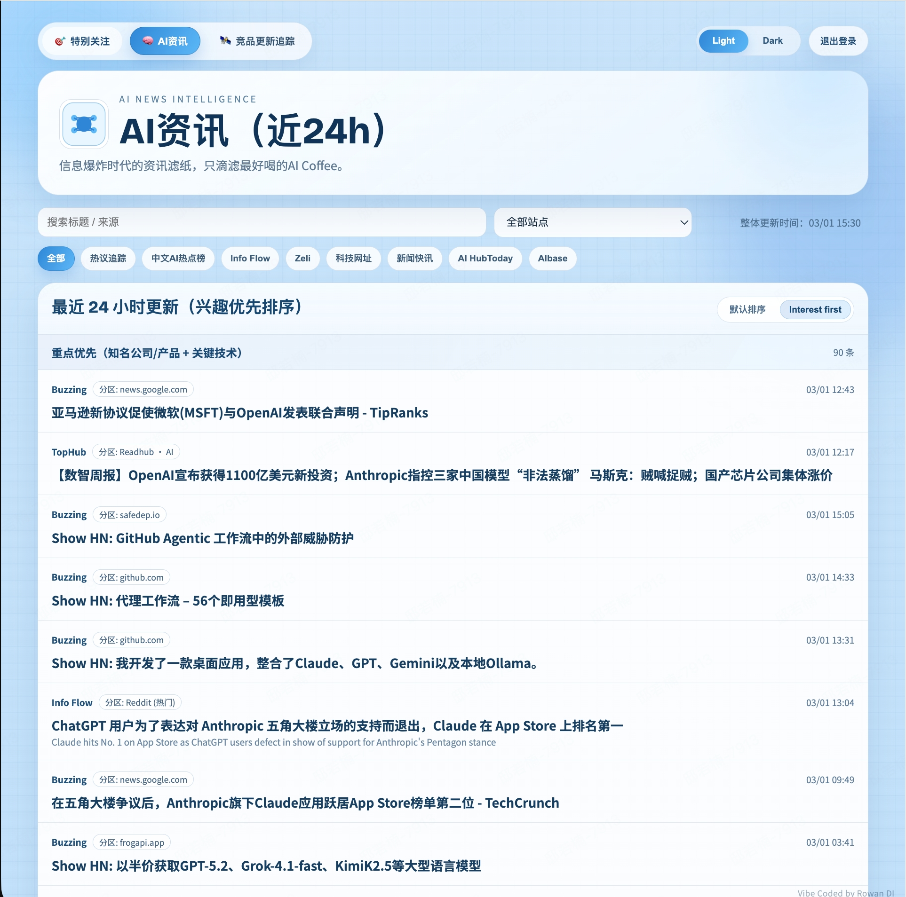
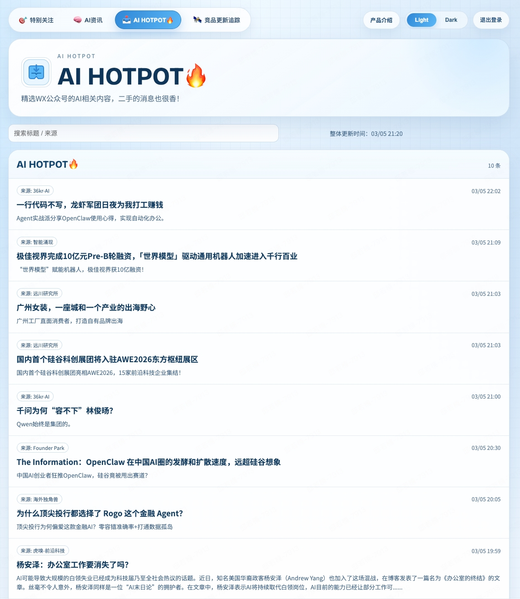
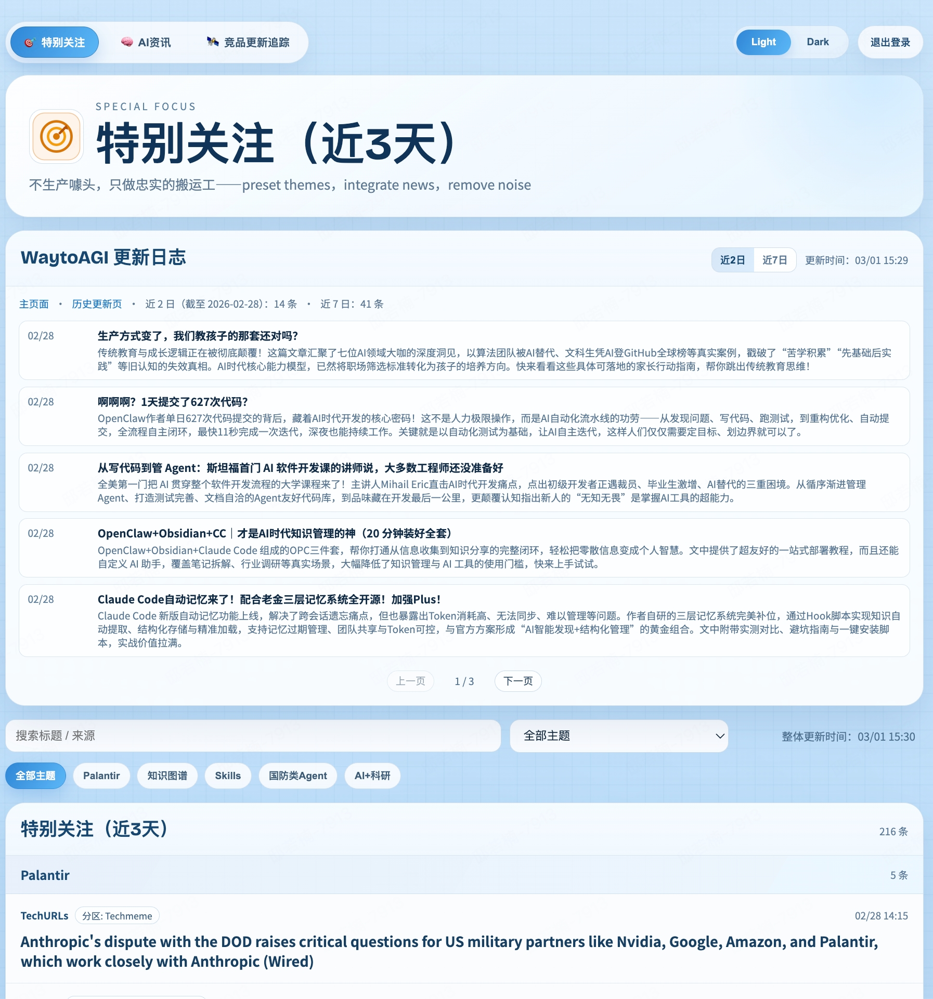
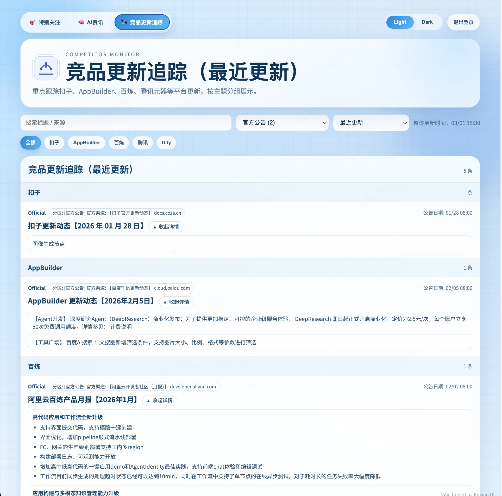
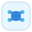

信息太多
- 每天都有大量新动态，但真正有价值的很少。
- 同一事件分散在多个平台，追踪成本高。
- 团队容易陷入“刷了很多，没记住什么”。

产品叙事版介绍
面向 AI 时代的信息决策产品，让“刷资讯”升级为“做判断”，帮助团队更快形成共识与行动。
产品界面




一句话定位
Agent智讯不是资讯站，而是团队的信息判断与协同入口。
本演示以产品价值和使用场景为主，不展开技术实现细节。
Why
当每个人都在看不同渠道、不同叙事，组织很难形成同频认知。
Value
把“看资讯”这件事，变成一个有结构、有节奏、有结果的流程。

先快速看到当天有哪些变化，建立完整视野。
把长期重要主题固定下来，形成持续观察面。
把对手动态与行业趋势放在一起，减少信息盲区。
让不同角色在同一页面里对齐认知，提升决策速度。
Journey
产品把复杂的信息处理拆成清晰步骤，让团队知道“下一步该看什么”。
先建立当天外部变化的整体认知。
把注意力收敛到和业务最相关的议题。
观察别人做了什么、为什么、意味着什么。
输出结论、优先级和下一步计划。
Core Boards
同一产品内完成“广度浏览 + 深度追踪 + 外部对照 + 补充视角”。
关键词：快、全、轻负担。
关键词：主线、连续性、深度。
关键词：对照、洞察、策略感。
关键词：补充、发现、灵感源。
Use Cases
不同角色进来看到的是同一个世界，但得到的是各自需要的答案。
Differentiation
重点不是“给更多信息”，而是“把信息组织成决策上下文”。
不只推内容，而是围绕主题与竞品形成上下文关系。
支持筛选、对照和聚焦，帮助团队形成可执行判断。
同一产品满足不同角色，共享观察面，降低协作成本。
既能看当下动态，也能沉淀长期主题与趋势脉络。
Adoption
从“每天看一眼”开始，逐步沉淀成组织的信息判断机制。
先用 AI资讯与竞品追踪完成每日固定扫描，形成稳定输入。
把业务关键议题放进特别关注，持续积累并观察变化方向。
将每周讨论、复盘和决策回看统一到同一产品视角中。
Agent智讯 / AI News Radar
当团队先看到关键变化、先形成共同判断、先进入行动节奏， 信息就不再是负担，而会成为真正的竞争力。
产品叙事版演示稿。